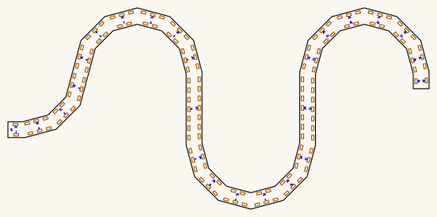
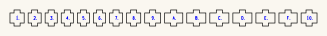
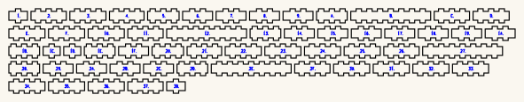

bore-ribbon
A bore of constant cross-section swept along a planar curve — cut flat, assembled with finger joints, no bending and no lamination.
python3 ribbon_bore.pyDownload everything as a ZIP — GitHub builds it from main on every push, so it is never out of date.
Built for LaserMadeMusic, where the cutting and the playing are shown.
The rest of the build files — every instrument, generator and tool, indexed.
See it before you cut it
Three pages, self-contained, drag to turn. Colour by face to read the construction, or by facet to follow the bore along its length; the reveal slider builds it up a facet at a time.
ribbon-coupon-bore10-30deg-R30.html | the 180° coupon |
ribbon-serpentine-bore10-30deg-3lobes-R72.html | the metre serpentine, 10mm bore |
ribbon-reversing-bore10-30deg-3lobes-R72.html | the same run with its ends facing opposite ways |
Two more draw instruments that live in other repositories, and they are the only things here still cut at 25mm — the objects are, so their names say so.
ribbon-torus-bore25-45deg-R76.html is torus-octagonal drawn as a ribbon bore, which is what it is — a closed ring of eight 45° facets at 25 × 25mm. Extrapolated from that repository's own cut file: a centreline octagon of circumradius 76.4696 puts the airway between apothems 58.149 and 83.149, which is what its verifier measures. --shape=torus.
ribbon-traced-octagonal-trumpet-bore25-45deg.html is trumpet-octagonal's bore — 1107.9mm at 25 × 25mm, twelve facets of 45°, and traced, not generated. That sheet's band is hand-authored and its curve is not written down as parameters anywhere, so the centreline was measured off a trace of the cheek and kept, with how it was taken, in traces/octagonal-trumpet.json. The trace confirmed the model rather than only supplying it: the strip came out 31.2mm wide — 25mm of airway with a 3mm wall each side — the turns came out at ±45°, the same facet angle as the torus, and the total turning came out at 0° — every turn cancels, so its mouth and its bell face the same way, not opposite ways. That is a fact about the traced shape and not a rule: the turn a mouthpiece and a bell want is 180°, which is what the reversing bore below draws. Treat its length as ±1%: the traced width scatters 30.7 to 35.5mm about that nominal.
Built by ribbon_view.py, which takes the same flags as the generator, plus --trace=. It draws the airway, not the plywood — the passage the air takes, bounded by the wall faces. That is the point: the section this repository is about is a property of the airway, and the bore was cut 3mm narrow for a week because nothing drew the space inside it.
The cut files themselves are hairlines on no background, which is close to invisible on a page, so previews/ holds a readable rendering of each — same geometry and same cut order, thicker strokes, inks darkened to stay legible on a light ground.


How this differs from the other two
| curve | section | joints | |
|---|---|---|---|
bore-generator | 90° lattice turns | +41.4% at each turn | finger joints |
torus-octagonal | a circle, 45° facets | +8.2% at each facet | finger joints |
bore-ribbon | any planar curve | +3.5% at 30°, and the dial goes lower | finger joints |
Why a planar curve
Sweep a rectangle along a curve that lies in a plane, with one axis normal to that plane, and the duct has two flat faces and two cylindrical ones. The flat pair are the cheeks and come straight off the sheet. The curved pair are the whole problem: 3mm birch will not bend to these radii, so they are faceted — short flat panels, each finger-jointed into both cheeks.
The section is exactly bore × bore along every facet. At each facet joint the walls mitre and the area there is bore² / cos(φ/2):
| facet angle | area at the joint | |
|---|---|---|
| 90° | +41.4% | a turn in the Minecraft lattice |
| 45° | +8.2% | the octagonal torus |
| 30° | +3.5% | this coupon |
| 15° | +0.9% |
That is the whole design dial. It trades against part count, and against how short the inner panels get.
What limits the bend
A wall is thickness thick and its slot is centred on the offset line, so the line the walls are offset to is (bore + thickness)/2, not bore/2 — put them at bore/2 and each wall intrudes half its thickness, leaving an airway of bore − thickness. That is exactly what this generator did until 2026-09-03: a bore asked to be 10 × 10 came out 7 × 10.
The inner wall's radius is R − (bore + thickness)/2, so there is no bore at all below that. Long before it, the inner panel gets too short to carry a finger: a Boxes.py tooth is 2 × thickness and does not scale with the bore. At the 10mm bore and 30° facets:
| R / bore | R | inner panel | holds a 6mm tooth? |
|---|---|---|---|
| 2.0 | 20mm | 6.87mm | no |
| 2.5 | 25mm | 9.46mm | no |
| 2.61 | 26.1mm | 10.03mm | just |
| 3.0 | 30mm | 12.05mm | yes, with 3.02mm shoulders |
| 4.0 | 40mm | 17.22mm | yes |
The coupon is R 30 for that reason, not because the bend wants to be that open. A real Bb trumpet runs R/bore ≈ 4.3.
The 1000mm serpentine
python3 ribbon_bore.py --shape=serpentine1000.0mm of centreline, in 52 parts on 2 files — three half-circles of R 71.754 joined by 90mm straight runs, with a 20mm lead at each end.
Only the 10mm bore is cut here. --bore still takes any value, so another is one command away and git has the 25mm sheets that were here until 2026-09-03.
| 10 × 10mm | |
|---|---|
| the cheek, cut twice | bore10 |
| the panels, cut once | bore10 |
| section | 100mm² |
| cheek band | 20mm |
| R / bore | 7.2 |
| play, per side | 0.025mm |
| shortest panel | 19.14mm |
| slots per cheek | 145 |
{kind=link}
{kind=link}
The play is not a constant, it is a lookup. PLAY_BY_BORE carries bore-generator's measured figures — 0.025mm per side at the 10mm bore and 0 at the 25mm — because required clearance falls as the joint grows. A bore that is not in the table gets the small-joint value and the generator says so, because too loose is a worse joint and too tight is no joint at all.
A bigger bore gets fewer slots on the same curve, which is worth knowing before changing --bore. The mitre trims each inner panel by ((bore + thickness)/2) × tan(φ/2) at both ends — 1.74mm at the 10mm bore against 3.75mm at 25 — so the panels get shorter and fit fewer teeth.
Why three half-circles and not two
A half-circle advances only 2/π of its own length in x. So a 1000mm serpentine wants 637mm of width no matter how many lobes it is cut into, and the bed is 600mm. Dividing it finer barely helps — it only claws back the lead-in:
| lobes | R | cheek | fits |
|---|---|---|---|
| 2 | 118mm | 634 × 274mm | no |
| 4 | 65mm | 620 × 161mm | no |
| 6 | 43mm | 600 × 119mm | no, by 0mm |
| 8 | 32mm | 581 × 96mm | barely |
What actually fixes it is the straight vertical runs between the lobes. They buy length in y, where there is room, instead of in x, where there is not. At three lobes and a 90mm rise the cheek is 531 × 251mm with 57mm of spare in the worse direction, and the panels stay long enough to carry real joints.
Long panels get more than one tooth
A 90mm straight run held by a single 6mm tab in its middle is a hinge, not a joint: it pivots and the seam opens. Teeth alternate with gaps of their own width, as Boxes.py does —
n = floor((L − 2 × shoulder + tooth) / (2 × tooth))— which is 1 up to 17.9mm, 3 at 34mm and 7 at 90mm. Every panel on the coupon is short enough to want exactly one, so the coupon's cut geometry did not move when this arrived.
The reversing bore
python3 ribbon_bore.py --shape=reversing1111.4mm of centreline, in 58 parts on 2 files — the serpentine and then one more quarter turn, which is the whole difference between the two.
An odd number of half-circles leaves the serpentine's tail at 90° to its mouth. A quarter turn on the end takes that to 180°, so the bore comes out facing back the way it went in. That is the shape a mouthpiece and a bell want: you blow one way and the instrument speaks the other, and neither end is asked to sit at an angle to the run it grows out of.
It costs 111.4mm of centreline and no bed at all. The turn folds back inside the envelope the lobes already occupy, so the cheek grows by 0.35mm in x and not at all in y, and the closest the bore comes to itself is 37.14mm — the same 37.14mm the serpentine already had between its own lobes, in a different place. The cheek band is 20mm, so two runs need 20mm centre to centre.
| 10 × 10mm | |
|---|---|
| the cheek, cut twice | bore10 |
| the panels, cut once | bore10 |
| section | 100mm² |
| turn, mouth to tail | 180° |
| centreline | 1111.4mm |
| cheek band | 20mm |
| R / bore | 7.2 |
| play, per side | 0.025mm |
| shortest panel | 19.14mm |
| slots per cheek | 160 |
| the two sheets | 552.6 × 274.2mm and 591.1 × 116.5mm |
{kind=link}
{kind=link}
 |
| ribbon-reversing-bore10-30deg-3lobes-R72-1111mm-panels-cut-files.svg · 591.1 × 116.5mm sheet |
The coupon
Two files: the cheek, which you cut twice, and the panels, which you cut once — a 180° turn at the 10mm bore, 123.2mm of centreline, 18 parts.
{kind=link}
{kind=link}
| Material | 3mm Baltic birch ply |
Kerf (BURN) | 0.1mm |
| Play | 0.025mm per side, out of the slot, never off the tab |
| Section | 10 × 10mm = 100mm², exact along every facet |
| Parts | 2 cheeks (0) · 8 inner panels (1–8) · 8 outer panels (9–10) |
The cheek is a thin band, not a plate. It stops WEB = 2mm outboard of each slot, so the band is 20mm wide for a 10mm bore — the bore, its two 3mm walls, and 2mm of ply either side. Less material, less weight, and the shape tells you what it is. 1.5mm is the floor worth cutting in 3mm birch; below that the strip beside a slot chars through.
Because there is no flange left to write on, the panel numbers are engraved in the channel — which is the floor of the bore. That is 0.1mm of roughness in a 10mm airway, and the alternative is sixteen near-identical panels with nothing on the cheek to say which slot each goes in.
The two cheeks are the same part — outline, slots and engraving all identical — and both go on the same way up.
Whether a flipped cheek would fit depends on the shape, and the generator reports it rather than assuming: the coupon's U is congruent to its own mirror, so one cheek could be turned over and rotated 180° and every tab would still land. Do it anyway and its numbers read mirrored, facing into the bore. The serpentine is not congruent to its mirror at any angle, so there a flipped cheek meets no tab at all.
Same way up, both of them, either way. The consequence is that one cheek carries its numbers on the inside; that is the cheaper of the two mistakes.
Because they are the same part, the cheek gets its own file and you cut that file twice. Nothing else is on it — the panels are a separate file, cut once. That is the whole reason for the split: the packer used to fill the second cheek's sheet with panels, so cutting one sheet twice left you thirteen panels short and no way to notice but counting.
Panels are numbered in hex with the baseline tick, the same glyphs the bore sections, the bell rings and the torus pieces use — 6 and 9 are one shape turned over and the tick says which way up. Each cheek slot carries the number of the panel that goes in it. Stand every panel with its number facing out; the engraving is 0.1mm of roughness and it does not belong in the airway.
Colour is the cut order: blue #0000ff engraves, orange #ff8000 cuts the slots while the sheet still holds the cheek, black #000000 frees the parts.
What this coupon is for
Three things, none of which a check can answer:
- The butt gap. Neighbouring wall panels do not join to each other — they butt, and the cheeks hold the alignment. At 30° facets with 3mm ply the gap on the convex side is
3 × tan(15°)= 0.80mm. That is a glue line, and whether it seals is the question. - The tab fit at 0.025mm per side, on a tooth that is 6mm in a panel that is only 12.05mm long.
- Whether 18 small parts is an assembly anyone wants to do twice.
If 0.80mm is too much, the gap is thickness × tan(φ/2), so it comes down with the facet angle: 0.53mm at 20°, 0.40mm at 15°. Halving it means 15°, not 20° — and 15° costs a bend radius of R 45 at this bore, because the inner panels shrink as the facets do and the tooth still does not scale.